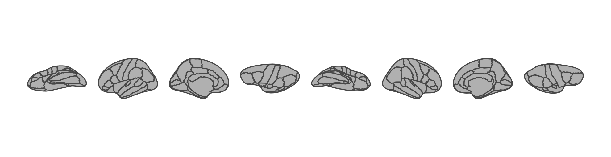
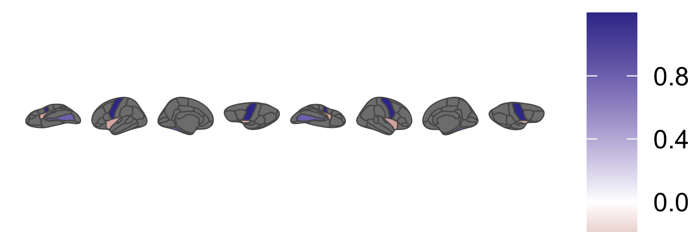
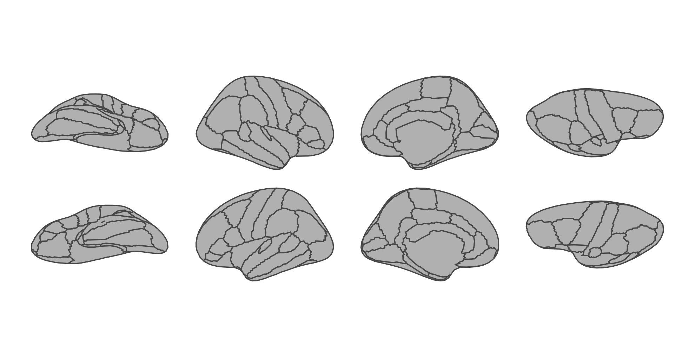
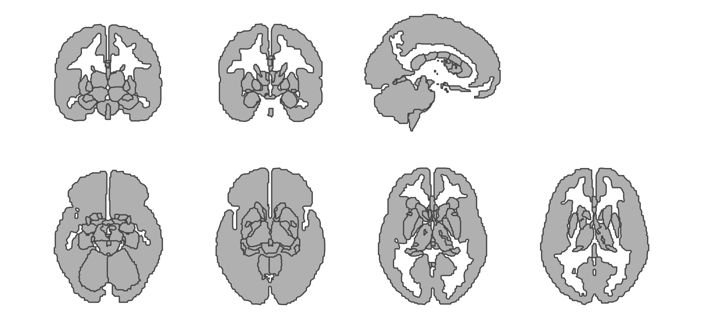
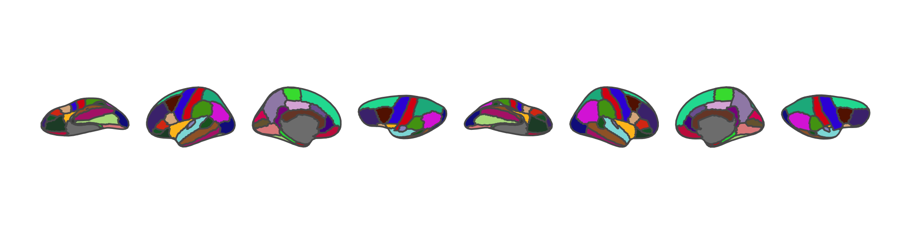
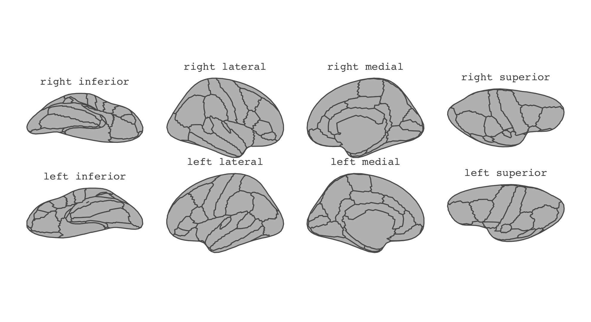

Download PDF
2D brain plotting with ggseg :: Cheatsheet
Brain atlas data as a ggplot2 layer
geom_brain(), view arrangement, palettes and themes.
Plotting
One layer, one atlas
ggseg adds a single layer type to ggplot2. An atlas supplies the geometry, your data supplies the values.
library(ggseg)
library(ggplot2)
ggplot() +
geom_brain(atlas = dk()) +
theme_void()
- Atlases are functions: call
dk(), notdk. - Regions are grey until you map
fill— see Atlas palettes. theme_void()removes the coordinate axes, which a brain plot has no use for.
geom_brain(
mapping = aes(), data = NULL, atlas,
hemi = NULL, view = NULL,
position = position_brain(),
context = TRUE, fun = mean, ...
)Atlases that ship with ggseg
| Atlas | Type | Covers |
|---|---|---|
dk() |
cortical | Desikan-Killiany, 35 regions per hemisphere |
aseg() |
subcortical | FreeSurfer automatic segmentation |
suit() |
cerebellar | SUIT cerebellar parcellation |
tracula() |
tract | TRACULA white-matter tracts |
Dozens more install from the ggsegverse r-universe — see the atlases and data structures sheet.
Accessors live in ggseg.formats, which ggseg loads but does not re-export:
library(ggseg.formats)
atlas_regions(dk())
atlas_labels(dk())
atlas_views(dk())
atlas_type(dk())Your data on the brain
Give ggplot() a data frame with a region or label column. geom_brain() joins it to the atlas, so you only name the regions you actually have.
scores <- data.frame(
region = c("precentral", "insula", "fusiform"),
score = c(1.2, -0.4, 0.8)
)
ggplot(scores) +
geom_brain(atlas = dk(), aes(fill = score)) +
scale_fill_gradient2() +
theme_void()
- Regions absent from your data are filled with
na.value— grey by default. - Join on
label(lh_precentral) to colour one hemisphere only. fun = meancollapses several rows that share a region.brain_join(data, atlas, by = NULL)returns the merged table instead of a plot, when you want to inspect the join.
Facet by a grouping variable
Each facet gets a whole brain, so one plot can carry several contrasts.
long <- data.frame(
region = rep(c("precentral", "insula", "fusiform"), 2),
score = c(1.2, -0.4, 0.8, -1.1, 0.2, 1.6),
session = rep(c("pre", "post"), each = 3)
)
ggplot(long) +
geom_brain(atlas = dk(), aes(fill = score)) +
facet_wrap(~session) +
theme_void()Arranging
position_brain()
position_brain() decides where hemispheres and views sit. For cortical atlases, pass a formula of rows ~ columns.
ggplot() +
geom_brain(
atlas = dk(),
position = position_brain(hemi ~ view)
) +
theme_void()
| Formula | Layout |
|---|---|
hemi ~ view |
hemispheres in rows, views in columns |
view ~ hemi |
views in rows, hemispheres in columns |
. ~ view + hemi |
a single row, every panel side by side |
hemi + view ~ . |
a single column, stacked |
Zooming and trimming
# zoom each view onto its focus regions
position_brain(hemi ~ view, zoom = TRUE)
# zoom onto named regions, with 10% padding
position_brain(hemi ~ view, zoom = "insula", zoom_pad = 0.1)
# keep only these views, in this order
position_brain(views = c("lateral", "medial"))Subcortical and tract atlases have slice views rather than hemispheres, so they take "horizontal", "vertical", nrow or ncol instead:
ggplot() +
geom_brain(
atlas = aseg(),
position = position_brain("horizontal", nrow = 2)
) +
theme_void()
Picking hemispheres and views directly
geom_brain(atlas = dk(), hemi = "left")
geom_brain(atlas = dk(), view = "lateral")reposition_brain(data, position, ...) rearranges an already-joined atlas table, and coord_brain(ratio = 1) fixes the aspect ratio by hand.
Colour
Atlas palettes
Every atlas carries the colours its parcellation is normally drawn in. They are not applied automatically: map fill to label and hand the palette to scale_fill_manual().
ggplot() +
geom_brain(
atlas = dk(),
aes(fill = label),
show.legend = FALSE
) +
scale_fill_manual(values = dk()$palette) +
theme_void()
atlas_palette(dk()) returns the same named vector, and atlas_plot_palette(dk()) draws it as a swatch.
Your own colours
pal <- c(
precentral = "#5e3c58",
insula = "#a8c5cb"
)
ggplot() +
geom_brain(
atlas = dk(),
aes(fill = region),
show.legend = FALSE
) +
scale_fill_brain_manual(pal, na.value = "grey90") +
theme_void()scale_fill_brain_manual(palette, na.value)— fill.scale_colour_brain_manual()/scale_color_brain_manual()— outlines.scale_brain_manual(palette, aesthetics)— both at once.
For continuous values, use ggplot2’s own scales: scale_fill_viridis_c(), scale_fill_gradient2(), scale_fill_distiller().
Deprecated.
scale_fill_brain(),scale_brain()and the*_brain2()family are superseded. Usescale_fill_manual()withatlas$palette, or the*_brain_manual()functions above.
Themes
theme_brain(text.size = 12, text.family = "mono")
theme_darkbrain(text.size = 12)
theme_brain2(
plot.background = "white",
text.colour = "darkgrey"
)
theme_custombrain(
plot.background = "white",
text.colour = "darkgrey",
text.size = 12
)These keep the axes and style the surround; theme_darkbrain() is the one for dark slides. ggplot2::theme_void() is the right choice when you want nothing but the brain.
Labels and checks
Naming the views
pos <- position_brain(hemi ~ view)
ggplot() +
geom_brain(atlas = dk(), position = pos) +
annotate_brain(dk(), position = pos, size = 1.5) +
theme_void()
annotate_brain()writes the view name (“left lateral”) above each view. Pass it the samepositionyou gavegeom_brain().- Subcortical and tract atlases get the raw view name instead (“axial_1”, “sagittal”).
scale_labs_brain()andscale_continous_brain()put hemisphere and view labels on the axes in place of coordinates.- Region names are not drawn by any of these — use
geom_sf_text()onas_sf_atlas(dk())if you need them.
Checking an atlas
plot(dk())
brain_test_plot(
dk(),
position = position_brain(hemi ~ view)
)Both draw every region in its palette colour — the quickest way to see whether a new or edited atlas renders.
Gotchas
dkis a function;dk()is the atlas. The missing parentheses are the most common error.- A brain with no
fillmapping is grey by design, not broken. - A region named in your data but missing from the atlas fails silently; check with
setdiff(data$region, atlas_regions(dk())). context = FALSEdrops the greyed-out surrounding structures that subcortical atlases draw for anatomical context.geom_brain_sf()andposition_brain_sf()are deprecated;geom_brain()is the polygon default, andas_sf_atlas()gives yousfgeometry forgeom_sf().
Learn more
https://ggsegverse.github.io— ecosystem documentationvignette("ggseg")— longer worked exampleshttps://github.com/ggsegverse— source and issues